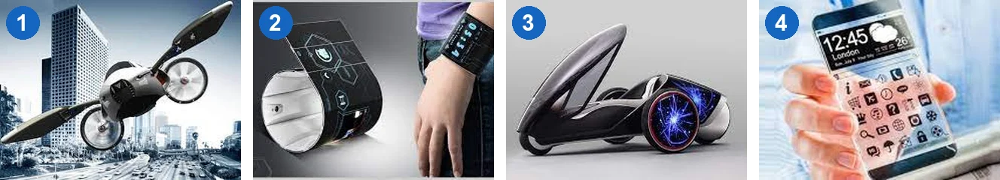
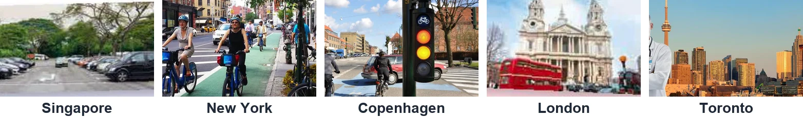

Smart cities around the world
Lesson 7 — Communication and Culture
3Four stops in 45 minutes
- 🔮
Things of the future
Warm-up
5 min - 💬
Everyday English
Certainty and uncertainty
20 min - 🌍
Culture
Smart cities around the world
15 min - ✅
Wrap-up
What have you learnt?
3 min
Warm-up
Things of the future
5 minutesHave you seen these in real life?

Which one would you like to own? 1 flying car · 2 smartwatch · 3 electric car · 4 see-through phone
Everyday English
Expressing certainty and uncertainty
20 minutesSure or not sure?
Will there be more high-rise buildings in our city? I’m not so sure.
Will more people live in cities in the future? Yes, I’m sure about it.
Which expression do you hear?
A. I’m not really sure about it
B. I have no doubt about it
A or B?
A or B?
Sort the expressions
I’m absolutely sure about it. ✔
I’m not sure this is true. ?
There can’t be any doubt that … ✔
I doubt it. ?
I don’t know for sure that … ?
I’m sure about it. ✔
There’s some doubt in my mind that … ?
Definitely! ✔
Certainty and uncertainty
Expressing certainty ✔
I’m sure about it.
I’m absolutely sure about it.
There can’t be any doubt that …
Expressing uncertainty ?
I don’t know for sure that …
I’m not sure this is true.
There’s some doubt in my mind that …
Make similar conversations — give reasons!
- 🚌
Prediction 1
A thinks we’ll use driverless buses and flying cars. B is sure or not sure.
- 🤖
Prediction 2
B thinks AI robots will do all the household chores. A is sure or not sure.
Driverless vehicles
AI robots at home
Culture
Smart cities around the world
15 minutesWhich cities in the world are smart? What makes them smart?

Cities around the world are becoming smarter, and you can do many things that seemed impossible in the past.
Smart cities around the world
Singapore — the mobile app Parking.sg allows you to locate a nearby car park easily, book a parking space, and make a payment. You can also extend your booking or receive a refund if you leave early.
New York City (US) has one of the largest bike-sharing systems called Citi Bike. Using a mobile app, you can unlock bikes from one station and return them to any other station in the system, making them ideal for one-way trips.
Smart cities around the world
Copenhagen (Denmark) — you can use a mobile app to guide you through the city streets and tell how fast you need to pedal to make the next green light. The app can also give you route recommendations and work out the calories you burn.
London (UK) — you don’t have to buy public transport tickets. You can just touch your bank card on the card reader when you get on and off the bus or the underground to pay for your trip.
Smart cities around the world
Toronto (Canada) — you can book an appointment and see a doctor online from your own home. You can also receive prescriptions and any other documents you need, all online.
locate = find · extend = make longer · refund = money returned · pedal = push a bike’s pedals · prescription = a doctor’s order for medicine
Singapore · New York · Copenhagen · London · Toronto
1. book a parking space via a mobile app Singapore
2. have a medical check-up online Toronto
3. use your bank card to pay for travelling on the bus or underground London
4. unlock your bike from one station and return it to any other station in the city New York
5. use a mobile app to help you choose the best route to cycle in the city Copenhagen
Which of the technologies would you like to have in your city or neighbourhood? Why?
Are any of them available in Viet Nam?
I’d like to pay for the bus with a bank card — it’s easier than paying in cash. I also hope our city will have a smart bike-sharing system, so people won’t use their own vehicles for short trips.
Are you sure? Tell your partner!
- ✔
expressions for certainty
- ❓
expressions for uncertainty
- 🌍
technologies in five smart cities
Homework
1. Do the Communication and Culture exercises in the workbook.
2. Find one more smart city and one technology it uses.
3. Get ready for Lesson 8 — Looking back and Project.